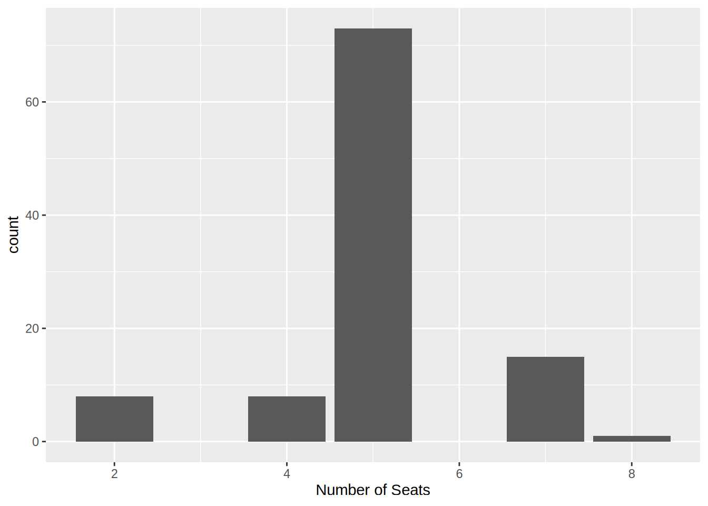
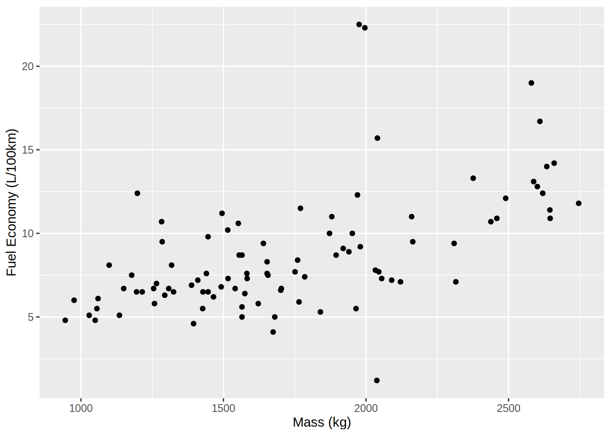

library("qatarcars")
str(qatarcars)tibble [105 × 15] (S3: tbl_df/tbl/data.frame)
$ origin : Factor w/ 8 levels "Germany","Italy",..: 1 1 1 1 1 1 1 1 1 1 ...
$ make : Factor w/ 31 levels "Audi","Bentley",..: 4 4 1 1 1 22 22 22 22 22 ...
$ model : Factor w/ 105 levels "2 Series Coupe",..: 3 96 80 81 7 57 41 33 43 44 ...
$ length : num [1:105] 4.71 4.5 5.01 4.54 4.46 ...
..- attr(*, "label")= chr "Length (m)"
$ width : num [1:105] 1.83 1.84 1.69 1.85 1.96 ...
..- attr(*, "label")= chr "Width (m)"
$ height : num [1:105] 1.44 1.64 2 1.41 1.42 ...
..- attr(*, "label")= chr "Height (m)"
$ seating : num [1:105] 5 5 5 5 5 4 5 5 5 5 ...
..- attr(*, "label")= chr "Number of Seats"
$ trunk : num [1:105] 59 505 605 321 425 500 480 610 435 565 ...
..- attr(*, "label")= chr "Trunk Capacity (L)"
$ economy : num [1:105] 7.6 6.6 12.1 8.7 6.5 13.3 13.1 NA 5.6 7.5 ...
..- attr(*, "label")= chr "Fuel Economy (L/100km)"
$ horsepower : num [1:105] 386 313 600 400 180 612 585 333 163 221 ...
..- attr(*, "label")= chr "Horsepower"
$ price : num [1:105] 164257 264000 630000 310000 165000 ...
..- attr(*, "label")= chr "Price (QAR)"
$ mass : num [1:105] 1653 1701 2490 1565 1325 ...
..- attr(*, "label")= chr "Mass (kg)"
$ performance: num [1:105] 4.3 5.4 3.6 3.8 6.7 4.1 4.3 5.6 6.8 9 ...
..- attr(*, "label")= chr "Time 0-100 km/h (s)"
$ type : Factor w/ 4 levels "Coupe","Hatchback",..: 4 3 3 4 4 4 3 3 3 3 ...
..- attr(*, "label")= chr "Type"
$ enginetype : Factor w/ 3 levels "Electric","Hybrid",..: 3 3 3 3 3 3 3 1 3 2 ...
..- attr(*, "label")= chr "Engine Type"head(qatarcars)# A tibble: 6 × 15
origin make model length width height seating trunk economy horsepower price
<fct> <fct> <fct> <dbl> <dbl> <dbl> <dbl> <dbl> <dbl> <dbl> <dbl>
1 Germa… BMW 3 Se… 4.71 1.83 1.44 5 59 7.6 386 1.64e5
2 Germa… BMW X1 4.50 1.84 1.64 5 505 6.6 313 2.64e5
3 Germa… Audi RS Q8 5.01 1.69 2.00 5 605 12.1 600 6.30e5
4 Germa… Audi RS3 4.54 1.85 1.41 5 321 8.7 400 3.10e5
5 Germa… Audi A3 4.46 1.96 1.42 5 425 6.5 180 1.65e5
6 Germa… Merc… Mayb… 5.47 1.92 1.51 4 500 13.3 612 1.28e6
# ℹ 4 more variables: mass <dbl>, performance <dbl>, type <fct>,
# enginetype <fct>summary(qatarcars) origin make model length
Japan :29 Toyota :10 2 Series Coupe : 1 Min. :3.595
Germany :20 Kia : 6 3 : 1 1st Qu.:4.495
PR China :18 BMW : 5 3 Series Sedan : 1 Median :4.681
UK :11 Mercedes: 5 720S : 1 Mean :4.664
South Korea:10 MG : 5 8 Series Gran Coupe: 1 3rd Qu.:4.850
USA : 9 Hyundai : 4 991 Carrera S : 1 Max. :5.469
(Other) : 8 (Other) :70 (Other) :99
width height seating trunk
Min. :1.595 Min. :1.122 Min. :2.00 Min. : 0.0
1st Qu.:1.818 1st Qu.:1.455 1st Qu.:5.00 1st Qu.: 284.0
Median :1.875 Median :1.540 Median :5.00 Median : 448.0
Mean :1.914 Mean :1.574 Mean :5.01 Mean : 437.6
3rd Qu.:1.979 3rd Qu.:1.685 3rd Qu.:5.00 3rd Qu.: 542.0
Max. :4.633 Max. :1.998 Max. :8.00 Max. :1233.0
economy horsepower price mass
Min. : 1.200 Min. : 76.0 Min. : 35000 Min. : 945
1st Qu.: 6.500 1st Qu.: 154.0 1st Qu.: 91000 1st Qu.:1428
Median : 7.600 Median : 248.0 Median : 164000 Median :1701
Mean : 8.698 Mean : 317.8 Mean : 796573 Mean :1776
3rd Qu.:10.650 3rd Qu.: 380.0 3rd Qu.: 310000 3rd Qu.:2055
Max. :22.500 Max. :1973.0 Max. :33000000 Max. :2746
NA's :10
performance type enginetype
Min. : 2.400 Coupe :14 Electric:10
1st Qu.: 4.800 Hatchback: 8 Hybrid :14
Median : 6.900 SUV :55 Petrol :81
Mean : 7.101 Sedan :28
3rd Qu.: 8.800
Max. :14.500
table(qatarcars$origin)
Germany Italy Japan PR China South Korea Sweden
20 5 29 18 10 3
UK USA
11 9 aggregate(price ~ enginetype, qatarcars, mean) enginetype price
1 Electric 1044377.0
2 Hybrid 372256.9
3 Petrol 839318.7plot(economy ~ mass, qatarcars)
plot(price ~ performance, qatarcars, log = "y")Rows: 105
Columns: 15
$ origin <fct> Germany, Germany, Germany, Germany, Germany, Germany, Germ…
$ make <fct> BMW, BMW, Audi, Audi, Audi, Mercedes, Mercedes, Mercedes, …
$ model <fct> 3 Series Sedan, X1, RS Q8, RS3, A3, Maybach, G-Wagon, EQS,…
$ length <dbl> 4.713, 4.505, 5.012, 4.542, 4.456, 5.469, 4.613, 5.216, 4.…
$ width <dbl> 1.827, 1.845, 1.694, 1.851, 1.960, 1.921, 1.984, 1.926, 1.…
$ height <dbl> 1.440, 1.642, 1.998, 1.412, 1.416, 1.510, 1.969, 1.512, 1.…
$ seating <dbl> 5, 5, 5, 5, 5, 4, 5, 5, 5, 5, 4, 5, 5, 5, 5, 5, 5, 2, 2, 5…
$ trunk <dbl> 59, 505, 605, 321, 425, 500, 480, 610, 435, 565, 132, 627,…
$ economy <dbl> 7.6, 6.6, 12.1, 8.7, 6.5, 13.3, 13.1, NA, 5.6, 7.5, 11.2, …
$ horsepower <dbl> 386, 313, 600, 400, 180, 612, 585, 333, 163, 221, 473, 453…
$ price <dbl> 164257, 264000, 630000, 310000, 165000, 1281000, 1011500, …
$ mass <dbl> 1653, 1701, 2490, 1565, 1325, 2376, 2588, 2495, 1565, 1656…
$ performance <dbl> 4.3, 5.4, 3.6, 3.8, 6.7, 4.1, 4.3, 5.6, 6.8, 9.0, 3.3, 4.4…
$ type <fct> Sedan, SUV, SUV, Sedan, Sedan, Sedan, SUV, SUV, SUV, SUV, …
$ enginetype <fct> Petrol, Petrol, Petrol, Petrol, Petrol, Petrol, Petrol, El…# A tibble: 8 × 2
origin n
<fct> <int>
1 Germany 20
2 Italy 5
3 Japan 29
4 PR China 18
5 South Korea 10
6 Sweden 3
7 UK 11
8 USA 9# A tibble: 3 × 2
enginetype avg_price
<fct> <dbl>
1 Electric 1044377
2 Hybrid 372257.
3 Petrol 839319.
if (require("ggplot2")) {
ggplot(qatarcars, aes(x = mass, y = economy)) +
geom_point()
}
if (require("ggplot2")) {
ggplot(qatarcars, aes(x = performance, y = price)) +
geom_point() +
scale_y_log10()
}